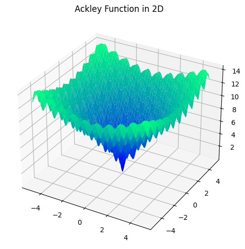
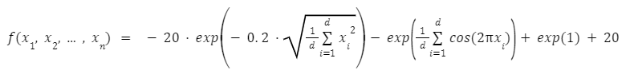

Ackley Function
This is a non-convex function with many local optima around a single global minimum of zero
at [0, 0, ... , 0].
This function implementation can be scaled to any number of dimensions depending on the number of inputs passed.

Form of the function is as follows:

function optiseek.testfunctions.ackley(*args)
Parameters
| Parameter | Description |
|---|---|
| *args : float | Dynamic amount of x values for the function. The dimension of the function adjusts to how many arguments are entered. |
Example
from optiseek.testfunctions import ackley
y = ackley(0, 0)
print(y)
0